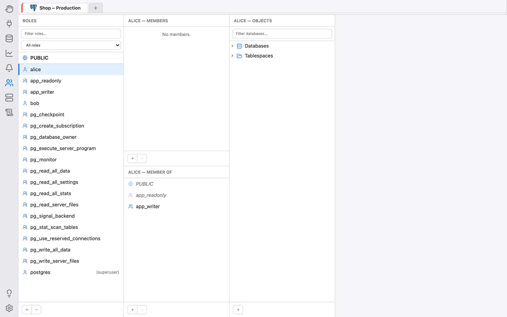
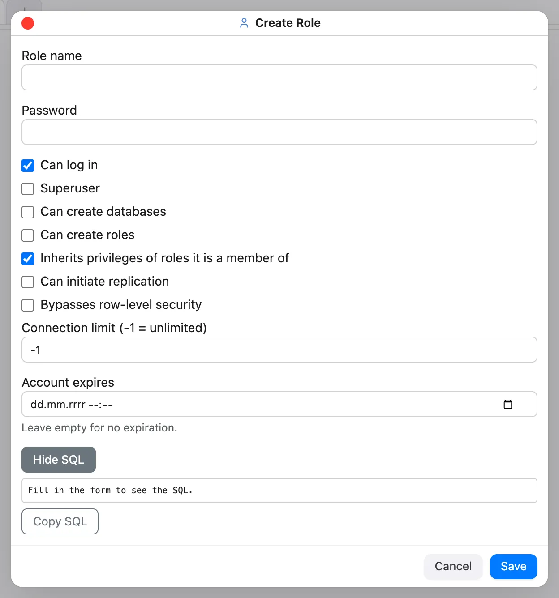
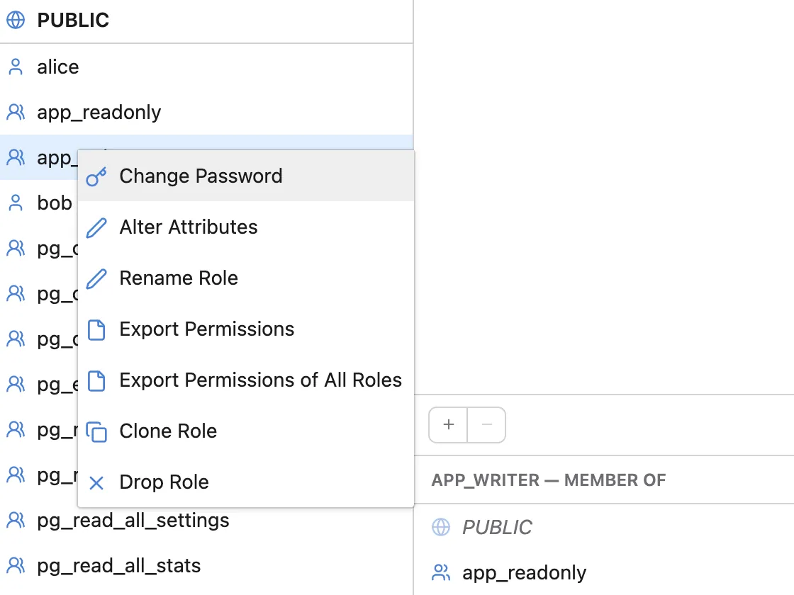
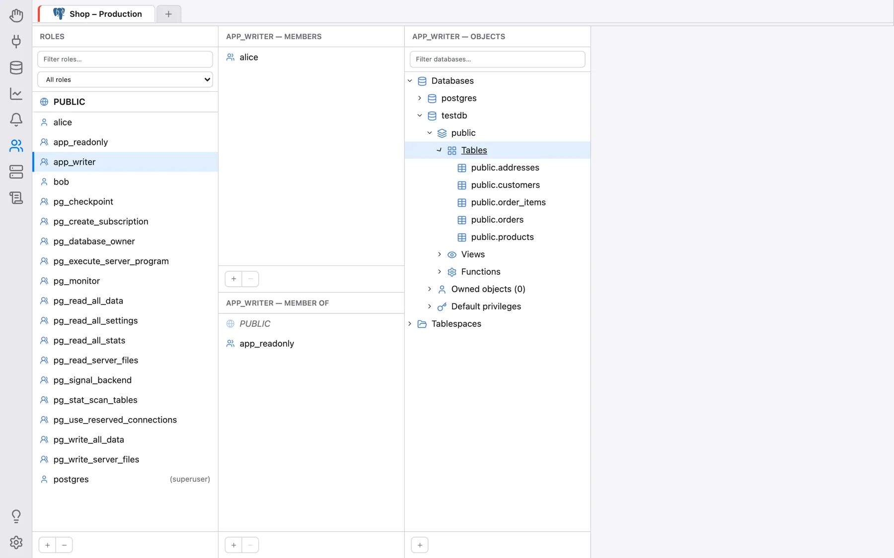
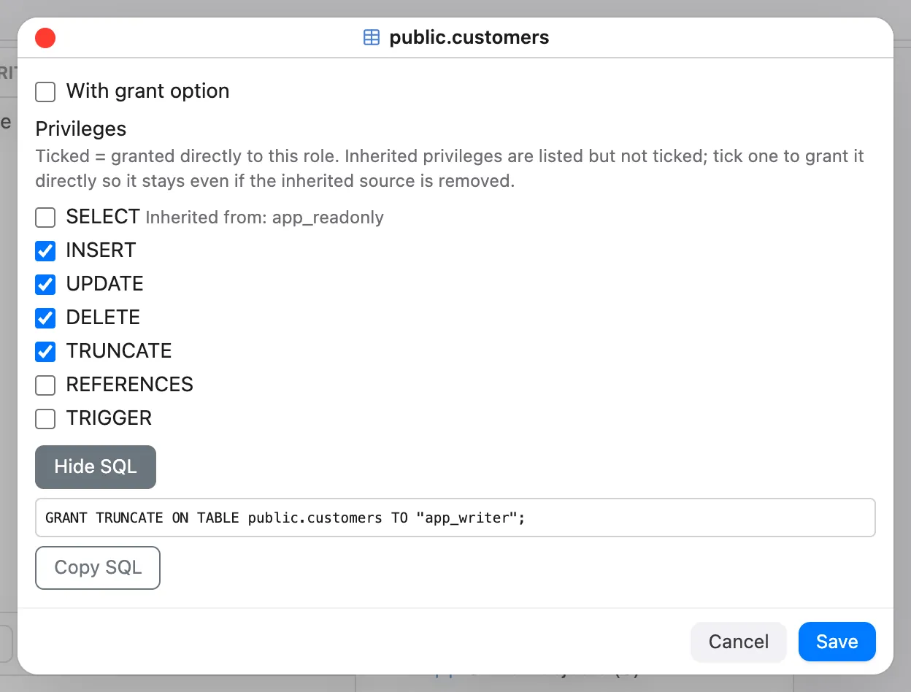
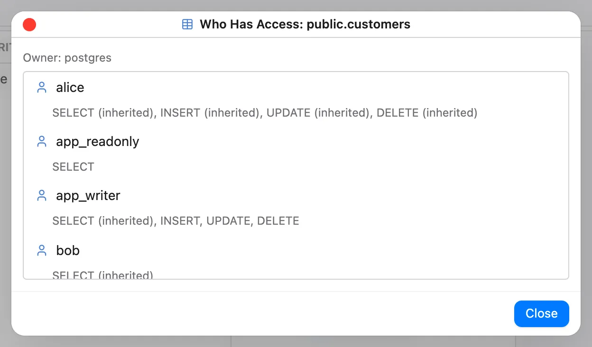

Roles e Permissões
A secção Permissões é um explorador de roles e privilégios para PostgreSQL. Apresenta as
roles de um servidor ao estilo do Finder, em colunas lado a lado: escolha uma role à esquerda, e as
colunas à sua direita mostram de que roles ela é membro, quem é membro dela, e o que ela pode
realmente fazer em cada objeto da base de dados — incluindo tudo aquilo que só tem indiretamente, através de
associações de roles herdadas ou através de PUBLIC. Roles, associações, privilégios,
privilégios predefinidos e propriedade podem ser criados, alterados e revogados ali mesmo.
Nota: esta secção suporta atualmente apenas o PostgreSQL. Para qualquer outra ligação, mostra As permissões ainda não são suportadas para … / De momento, apenas o PostgreSQL é suportado.

Abrir a secção
Clique no ícone Permissões (o ícone das pessoas) na barra esquerda. A secção trabalha sobre uma ligação que já está aberta na secção Base de dados: a mesma faixa de separadores de ligação abertos é mostrada no seu topo, e a secção usa o separador de ligação que estiver selecionado. Sem nenhuma ligação aberta, mostra Nenhuma ligação aberta — abra primeiro uma (consulte Gerir Bases de Dados). As colunas são reconstruídas sempre que entra na secção, pelo que qualquer seleção anterior é reposta.
Tudo o que fizer aqui requer os mesmos privilégios de que o SQL equivalente precisaria
(CREATEROLE, superutilizador, ou ser proprietário do objeto, consoante a ação) —
o OmniDB executa as instruções com as credenciais da ligação que está a usar. As três
colunas podem ser redimensionadas arrastando a pequena pega no seu bordo direito; um duplo clique
numa pega repõe essa coluna, e as larguras são memorizadas.
Coluna 1: Roles
A coluna Roles lista todas as roles do servidor, incluindo as roles incorporadas
pg_*, ordenadas por nome. As roles que podem iniciar sessão (utilizadores) têm um ícone de uma só pessoa;
as que não podem (grupos) têm um ícone de duas pessoas; os superutilizadores são assinalados com superutilizador e as roles
cuja conta expirou com expirada. A primeira linha é sempre
PUBLIC (ícone do globo) — não é uma role real, mas a pseudo-role a que todas as roles pertencem
implicitamente, para que os privilégios concedidos a PUBLIC possam ser explorados e editados da mesma
forma.
A caixa acima da lista filtra as roles por nome, e a lista pendente ao lado filtra-as por tipo: Todas as funções, Utilizadores (podem iniciar sessão), Grupos (sem início de sessão), Superutilizadores ou Expiradas.
Clique numa role para a pôr em foco; as outras colunas mostram então essa role. Por baixo da lista:
- + abre o diálogo Criar role: Nome do role, Palavra-passe e as caixas de seleção de atributos Pode iniciar sessão (ativada por predefinição), Superutilizador, Pode criar bases de dados, Pode criar roles, Herda os privilégios dos roles de que é membro (ativada por predefinição), Pode iniciar a replicação e Ignora a segurança ao nível da linha, mais Limite de ligações (-1 = ilimitado) e A conta expira em (deixe vazio para não expirar).
- − elimina a role selecionada (desativado para
PUBLIC).

Clicar com o botão direito numa role (que não seja PUBLIC) oferece:
- Alterar palavra-passe — pede a nova palavra-passe duas vezes. A palavra-passe é transformada em hash no formato para o qual o próprio servidor está configurado (SCRAM-SHA-256 ou md5) antes de ser enviada.
- Alterar atributos — os mesmos campos de atributos que Criar role, preenchidos com os valores atuais da role. Limpar A conta expira em remove a expiração.
- Renomear função —
ALTER ROLE … RENAME TO. As concessões, associações e propriedade acompanham a role; o diálogo avisa que o PostgreSQL apaga uma palavra-passe guardada como md5 ao renomear. - Exportar permissões / Exportar permissões de todas as funções — um script SQL copiável
que recria as permissões:
CREATE ROLE(apenas atributos), associações, privilégios diretos sobre objetos e privilégios predefinidos, com as instruções de cada base de dados sob o seu próprio cabeçalho. Cada parte pode ser desativada e o script é regenerado; Guardar como ficheiro… guarda-o (um diálogo nativo de guardar na aplicação de ambiente de trabalho, uma transferência no navegador). As palavras-passe, as concessões dePUBLIC, a propriedade e as definições das roles não são exportadas. - Clonar função — cria uma nova role com os atributos da role de origem e, opcionalmente,
as suas associações diretas e os seus privilégios diretos sobre objetos em todas as bases de dados (encontrados através de
pg_shdepend, pelo que as bases de dados onde não detém nada nunca são abertas). A palavra-passe não é copiada; pode definir uma no diálogo. Os privilégios predefinidos, os objetos próprios e as definições por role não são copiados. - Eliminar role — se a role ainda for proprietária de objetos ou detiver privilégios, o diálogo lista,
por base de dados, o que ela possui e detém e pergunta que role assume os seus objetos. O OmniDB executa então
REASSIGN OWNEDeDROP OWNEDem cada base de dados afetada (por esta ordem, para que nada seja eliminado) antes deDROP ROLE. Sem quaisquer dependências, limita-se a pedir confirmação.

Coluna 2: associações
A segunda coluna está dividida em duas metades:
- … — Membros (em cima): as roles que são membros da role em foco. Com
PUBLICem foco, lista todas as roles, uma vez que todas recebem implicitamente os privilégios dePUBLIC. - … — Membro de (em baixo): todas as roles a que a role em foco pertence, diretamente ou
através de outras roles, reunidas numa única lista.
PUBLICaparece sempre em primeiro lugar.
Em ambas as metades, as associações diretas são mostradas em texto normal e as indiretas (herdadas)
em itálico com um ícone esbatido. Uma associação direta concedida WITH ADMIN OPTION é assinalada com
(admin option); no PostgreSQL 16 e posteriores, (sem herança) e (sem SET)
assinalam associações que não têm a opção INHERIT ou SET.
- O + por baixo de Membro de abre Conceder associação: escolha uma ou mais roles (clique nas linhas para as alternar) de que tornar a role em foco membro, opcionalmente Com opção de administração (admin option). No PostgreSQL 16+, o diálogo oferece também as escolhas Herdar os privilégios da função (INHERIT) e Pode fazer SET ROLE para ela (SET) (Predefinição do servidor / Sim / Não).
- O + por baixo de Membros abre Adicionar membro: o mesmo diálogo no sentido inverso — as roles escolhidas tornam-se membros da role em foco.
- − (ou botão direito → Remover associação) revoga uma associação depois de perguntar Revogar a associação a "…"?. Só as associações diretas podem ser removidas; uma herdada tem de ser revogada onde é efetivamente concedida.
- Botão direito → Editar opções de pertença altera no local a opção de administração de uma associação direta
e (no PostgreSQL 16+) as opções
INHERIT/SET. - Fazer duplo clique numa linha, ou botão direito → Definir como role ativo, torna essa role a role em foco, exatamente como se tivesse clicado nela na coluna Roles — a forma mais rápida de seguir uma cadeia de herança para cima.
Coluna 3: objetos e privilégios efetivos
A terceira coluna, … — Objetos, é uma árvore de tudo aquilo sobre que a role em foco tem algum
privilégio — os seus privilégios efetivos: as suas próprias concessões diretas mais tudo o que
herda através das suas associações e através de PUBLIC. Começa com dois grupos,
Bases de dados (todas as bases de dados do servidor) e Tablespaces; um nó é mostrado
normalmente se a role tiver algum privilégio aí, e a cinzento caso contrário. A caixa no topo
filtra as bases de dados e os tablespaces por nome e mantém o seu texto quando muda de role.
Expandir uma base de dados carrega os seus objetos através de uma ligação separada a essa base de dados (a base de dados ativa do próprio separador de ligação não muda): esquemas e, dentro de cada esquema, pastas para tabelas, vistas, sequências, funções, procedimentos, vistas materializadas, tipos e domínios; os foreign data wrappers e os servidores externos ficam diretamente por baixo da base de dados. Só são listados os objetos sobre os quais a role tem efetivamente algum privilégio (os esquemas de sistema são omitidos); um esquema mostrado a cinzento só está lá porque algo no seu interior está. Cada base de dados tem ainda duas pastas extra: Objetos próprios (n), que lista o que a role possui aí (até 1000 entradas), e Privilégios predefinidos, descritos abaixo. Se não houver absolutamente nada, a base de dados mostra Sem privilégios sobre nenhum objeto desta base de dados.

Editar privilégios
Clique com o botão direito numa base de dados, tablespace, esquema ou objeto e escolha Editar privilégios. O diálogo lista, como caixa de seleção, cada privilégio válido para esse tipo de objeto:
- base de dados:
CREATE,CONNECT,TEMPORARY; - tablespace:
CREATE; esquema:CREATE,USAGE; - tabela, vista e vista materializada:
SELECT,INSERT,UPDATE,DELETE,TRUNCATE,REFERENCES,TRIGGER; - sequência:
USAGE,SELECT,UPDATE; - função e procedimento:
EXECUTE; - tipo, domínio, foreign data wrapper e servidor externo:
USAGE.
As caixas de seleção mostram o que a role detém diretamente:
- assinalada — concedida diretamente à role; desmarque-a para a revogar (
REVOKE); - não assinalada — não concedida diretamente; assinale-a para a conceder (
GRANT). Se a role já tiver o privilégio através de outra role ou dePUBLIC, fica não assinalada e é etiquetada Herdado de: … — pode mesmo assim assinalá-la para a conceder diretamente, de modo a que sobreviva à remoção da associação de onde veio. Para retirar um privilégio herdado, revogue-o na sua origem (torne ativa a role de origem com Definir como role ativo).

Com opção de concessão (grant option) aplica-se aos privilégios que conceder de novo nesse diálogo. Confirme com Guardar.
Para conceder algo sobre um objeto que ainda não está na árvore, use o +
(Adicionar privilégio sobre objeto) por baixo da coluna: escolha o Tipo de objeto, depois a
Base de dados (para tudo exceto bases de dados e tablespaces; por predefinição, a base de dados atual
da ligação), o Esquema para objetos ao nível do esquema, o próprio
Objeto (as funções são mostradas com a sua assinatura de argumentos), assinale os
Privilégios e, opcionalmente, Com opção de concessão (grant option). Para tabelas, sequências, funções
e procedimentos, a escolha Âmbito pode ser mudada de Objeto selecionado para Todas as …
do esquema, com Conceder ou Revogar: o OmniDB executa então GRANT/REVOKE
… ON ALL … IN SCHEMA, o que afeta os objetos que existem agora, não os criados mais tarde.
Selecionar PUBLIC na primeira coluna permite-lhe editar aquilo que está concedido ao próprio
PUBLIC (GRANT … TO PUBLIC / REVOKE … FROM PUBLIC).
Privilégios predefinidos
A pasta Privilégios predefinidos de uma base de dados lista as entradas de ALTER DEFAULT PRIVILEGES
que envolvem a role em foco, seja como beneficiária ou como role criadora. São a
forma de cobrir os objetos criados no futuro. Clique com o botão direito na pasta para Adicionar privilégios
predefinidos: escolha a role criadora (Para objetos criados por), o esquema (ou todos os
esquemas), o tipo de objeto (tabelas, sequências, funções, tipos, esquemas) e os privilégios. Clique com o botão direito
numa entrada existente para Editar privilégios (só as marcas que alterar são concedidas ou revogadas) ou
Remover privilégios predefinidos.
Propriedade e quem tem acesso
- Alterar proprietário (menu de contexto de qualquer objeto na coluna Objetos) executa
ALTER … OWNER TOpara o objeto. - Quem tem acesso é a vista inversa: lista todas as roles que podem fazer algo
com o objeto e porquê — proprietário, concessão direta, herdado através de uma associação ou superutilizador —
mais
PUBLIC, com marcas de opção de concessão. As respostas vêm das próprias funçõeshas_*_privilegedo PostgreSQL, pelo que correspondem ao que o servidor realmente permite. As roles que só têm o quePUBLICdá a todos são omitidas e os superutilizadores são agrupados num grupo recolhido; clicar numa role torna-a a role ativa.

Pré-visualizar o SQL
Os diálogos para criar, alterar, renomear e clonar roles, adicionar associações, conceder ou editar privilégios, privilégios predefinidos e alterar proprietários têm uma caixa recolhível Mostrar SQL. Mostra as instruções exatas que os valores atuais do formulário executariam — construídas pelo mesmo código do servidor que a chamada real, nada é executado, as palavras-passe são mascaradas — e mantém-nas atualizadas à medida que o formulário muda. Copiar SQL copia-as.
Importante: confirmar um diálogo executa as instruções no servidor de imediato — não há forma de anular. Reveja-as primeiro com Mostrar SQL. Eliminar role, Remover associação e Remover privilégios predefinidos também pedem confirmação. Se o servidor rejeitar uma instrução, é mostrada a respetiva mensagem de erro.